画像のNPCってアイコンをクリックしてレイミーのところへ飛ぼう
※もし間違ってイベントウィンドウを消したら、クイックビューの人が踊ってるアイコンをクリックすればよいです
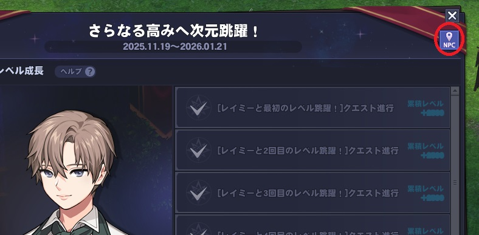 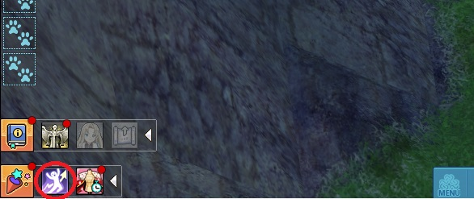
レイミーと話してアルカナ体験ゾーンへ行こう！
ここでは６種類のアルカナが体験できる。体験を終了したい場合はレイミーと話してミッションクリアを選ぶ
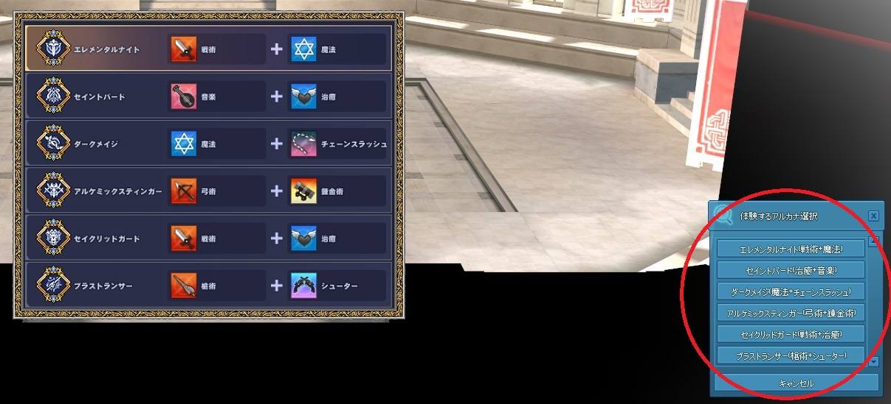 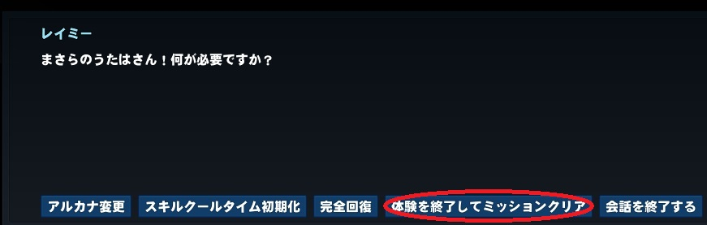
外に出てレイミーと話すと取得したいアルカナを選べる
選んだら次元跳躍の部屋へ入れる。入って画像の右の指示通りスキルを使って、右が自由体験時間になったら
レイミーと話してミッションクリアするといい
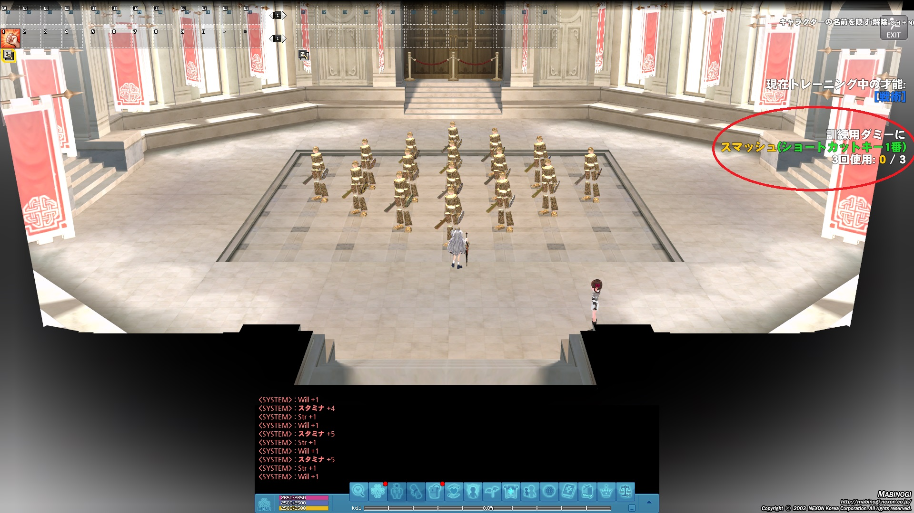 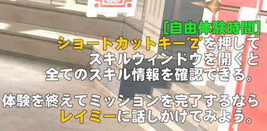
二つの次元跳躍部屋を終わらせると報酬獲得を選んでアルカナ取得に必要なグランドマスターを取得
※ここがアルカナを変更できる最後のポイント！変更したい場合画像の右上のアイコンをクリック
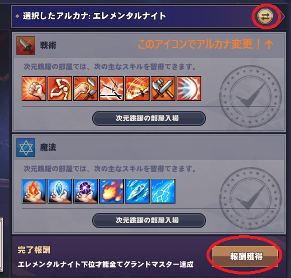
取得後レイミーと話してラフ王城へ移動して、正面の執務室へ入ってエレモンと会話
会話終わると「Q」を押してクエスト欄を開く、アルカナタブへ移して、もう一歩上をクリックし自動移動する
※金がない場合は移動ではなく、右の徒歩移動選ぶといい(乗れるペットも呼び出すと自動で乗る)
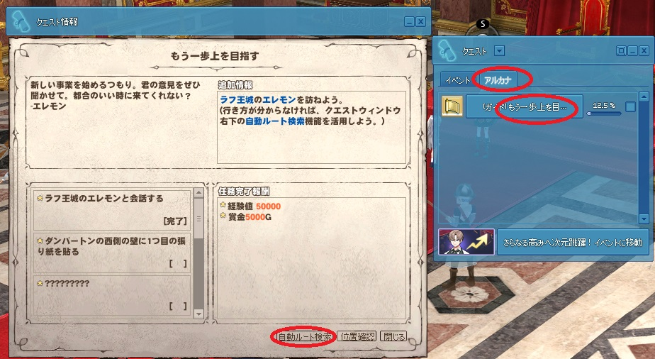 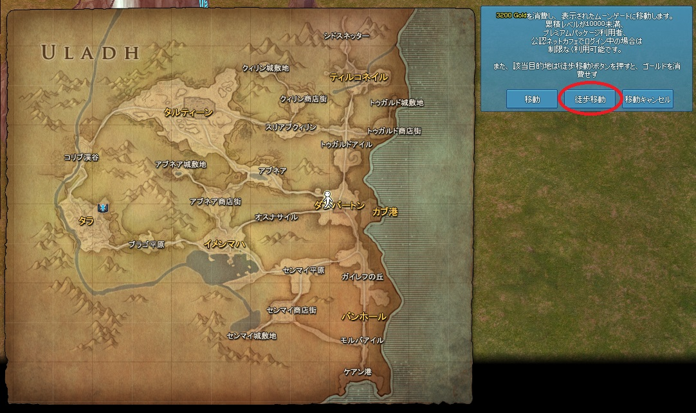
ダンバートンで張り紙を終わらせ、王城に戻ってエレモン達と会話し、ちょっとしたクエストが開始されます
まずはウィンドミルとアイスボルトを「交互」に使って木人に攻撃
ムービが入った後、E-Injection:アイスを使い、通常攻撃で木人を攻撃「し続ける」
会話が入ったあとはアイスウィンドミルを使って攻撃すればクリア
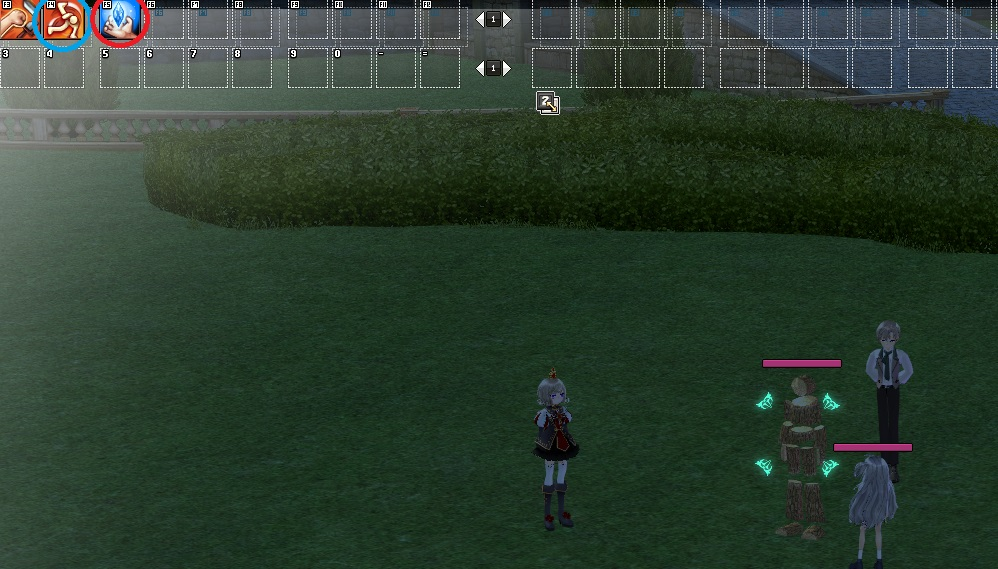 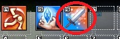 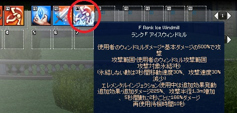
再びエレモン達と会話すればクエストクリア、クエスト欄開いてアルカナタブのもう一歩上を目指すの任務完了押すのを忘れずに
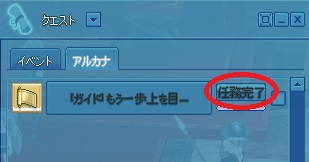そして執務室を出て、アルカナ協会室へ入る(右ドラッグして視点を変える必要ある)
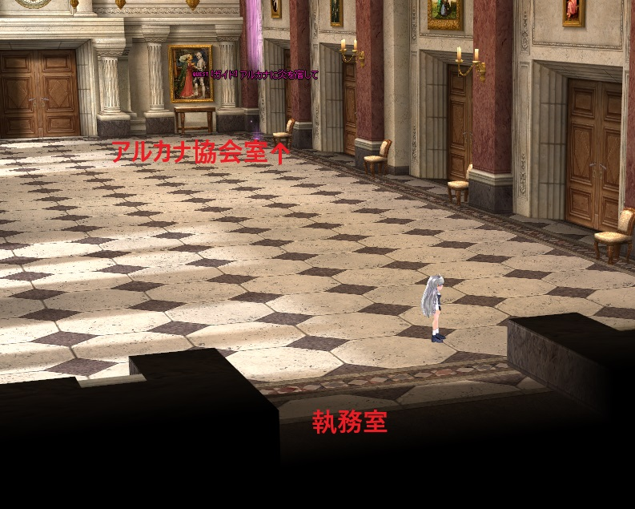レイールと話して、もう一度執務室でエレモンと話して、メニューバーのスキルアイコンクリックでアクションを選び
アクション欄の大陸移動の使用するをクリックしよう
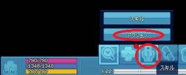 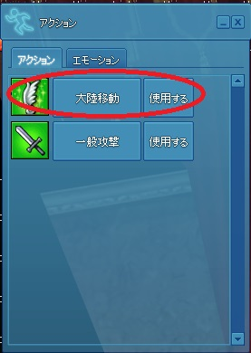
そしたらキャンプへ行き、キャンプから出て、マナトンネルの地面の黒い円をクリックして使用しカリダへ行く
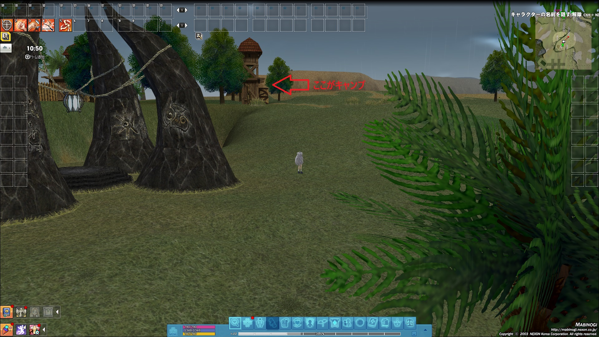 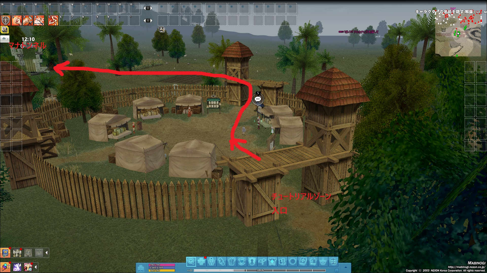 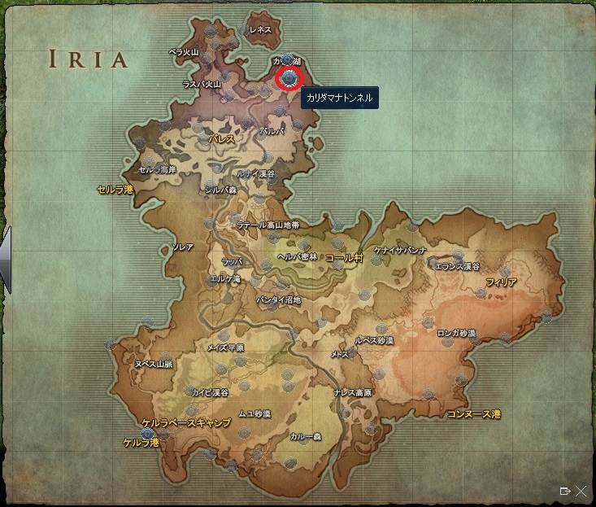マナトンネルの右にいるベリタと会話し、ケルピーと会話し、またベリタと会話したあと
メニューバーの情報アイコン→ダンジョンガイドをクリックし、ダンジョンリストを開く→アルビダンジョン→ダンジョン移動でウルラ大陸へ戻ろう
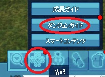 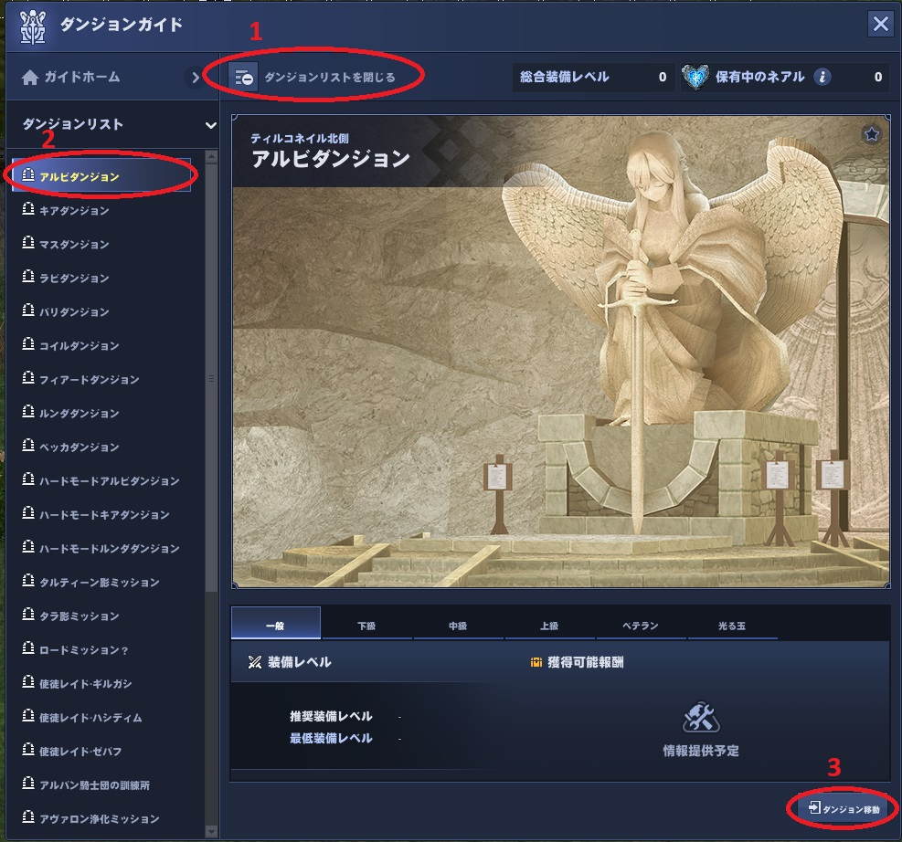
そしてクエスト欄を開き、アルカナタブ→アルカナに炎を宿しての自動ルート検索の徒歩移動でダンバートンへ移動
アイラと会話したあと、メインインベントリの専用タブにある白紙をCtrlプラスクリックで使用(ペットから降りないと使用できない)
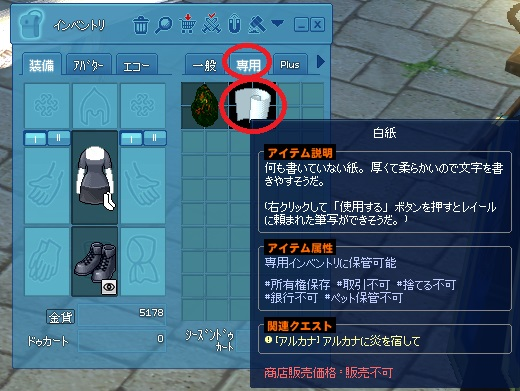書いた通り「模様=結び」を入力(=は半角)、「結びは流れだ」、「結びでバランスを取る」、「目的に合った模様を描く」を順次入力すれば大丈夫です
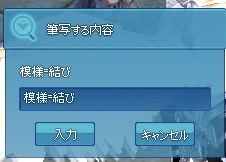 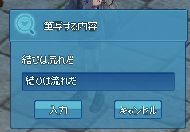 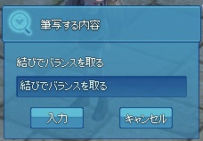 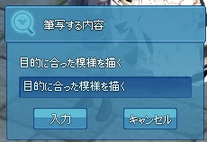
そしたらクエスト欄→アルカナタブ→アルカナに炎を宿して→自動ルート検索の徒歩移動で協会室へ戻りレイールと話す
ちょっとしたミッションが開始し、緑の円へ移動したあと祭壇にクリックして、会話が始まってそれでクリア
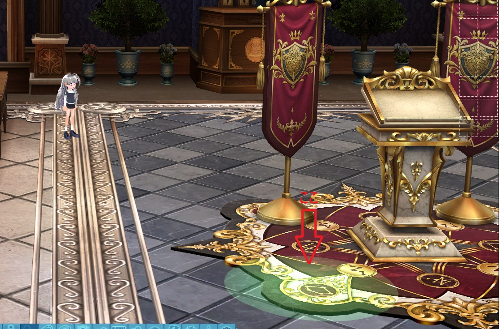 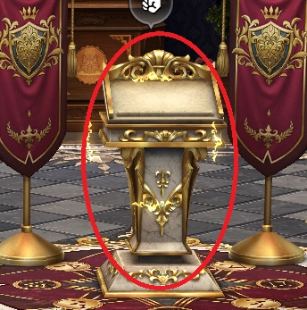そのあとはメインインベントリの専用タブにある「小さなアルカナの炎」を使えばクエストクリア、クエスト欄のアルカナに炎を宿しての任務完了押すの忘れずに
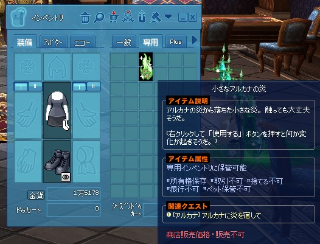 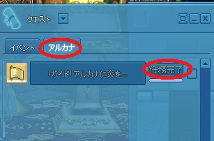→第三段階：アルカナ完成編へ